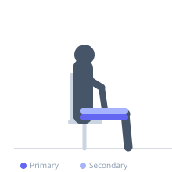
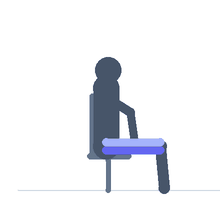

Exercise guide / Hip Adduction Machine
Hip Adduction Machine
The hip adduction machine is a seated machine exercise that works the inner thigh adductors by pressing the knees inward against pad resistance. The adductor magnus, adductor longus, adductor brevis, and gracilis are the primary movers. The machine isolates the adductors by removing the balance requirements of standing adduction exercises, and provides consistent resistance through the entire range of motion.
Primary muscles
adductor magnus
adductor longus
adductor brevis
gracilis
Secondary muscles
pectineus
Stabilizers
transverse abdominis
Equipment
Hip Abductor / Adductor Machine


Starting position
- Sit in the hip adduction machine with back against the pad. Place legs on the outer sides of the pads with knees and ankles against the pad surfaces. Set pads to a wide starting position.
Setup
- Adjust seat height and pad width for a comfortable starting stretch. Use a weight that allows full range of motion.
Steps
- Step 1: Sit in the machine with back flat, legs on outer sides of pads. Begin with pads in the wide starting position.
- Step 2: Press both legs inward — adducting the hips — by squeezing the inner thighs.
- Step 3: Press until the pads are as close together as the machine allows.
- Step 4: Hold the peak contraction briefly.
- Step 5: Return slowly to the wide starting position under control.
Coaching cues
- Squeeze the inner thighs — not the glutes
- Control the opening — resist the pads on the way out
- Keep the back flat — don't lean forward
Breathing
- Exhale as you press the legs together. Inhale as you open.
Range of motion
- Open to a comfortable stretch at the start. Close fully at the end.
Tempo
- 2-1-3-0 (slow eccentric return)
Common mistakes
- Using momentum — slow, controlled movement throughout
- Not controlling the eccentric — the opening phase should be slow
- Rounding the lower back against the pad
Safety
- Avoid if the exercise causes groin strain — reduce range or weight
- Start conservatively — the adductors can be strained if loaded aggressively without warm-up
Training
- hypertrophy: 12–20 reps
- endurance: 15–25 reps
- hypertrophy: 3–4 sets
- endurance: 2–3 sets
- Rest: {'hypertrophy': 60, 'endurance': 45}